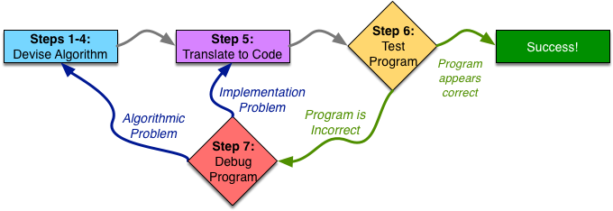
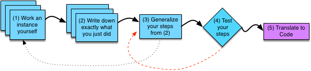

The Seven Steps of Programming
Many novice programmers attempt to dive right into writing the code (in the programming language) as the first step. However, writing the code is actually a much later step in the process. A good programmer will plan first and write second, possibly breaking down a large programming task into several smaller tasks in the process. Even when cautioned to plan first and code second, many programming students ignore the advice—after all, why “waste” 30 minutes planning when you are time-crunched from all the work you have to do. This tradeoff, however, presents a false economy—30 minutes planning could save hours of trying to make the code work properly. Well planned code is not only more likely to be correct (or at least closer to correct), but is also easier to understand—and thus fix.
To try to better understand the importance of planning before you write, imagine an analogy to building a house or sky scraper. If you were tasked with building a sky scraper, would you break ground and start building right away, figuring out how the building is designed as you go? Hopefully not. Instead, you (or an architect) would design blueprints for the building first. These blueprints would be iteratively refined until they meet everyone’s specifications—they must meet the requirements of the building’s owner, as well as be possible to build reasonably. Once the blueprints are completed, they must be approved by the local government. Actual construction only begins once the plans are fully completed. Programming should be done in a similar manner— come up with a complete plan (algorithm) first and build (implement in code) second.
We said that the heart of programming is to figure out how to solve a class of problems—not just one particular problem. The distinction here is best explained by an example. Consider the task of figuring out if a particular number (e.g., 7) is prime. With sufficient knowledge of math (i.e., the definition of a prime number and the rules of division), one can solve this problem—determining that 7 is in fact prime. However, a programming problem typically looks at a more general class of problems. We would typically not write a program to determine if 7 is prime, but rather a program which, given a number N, determines if N is prime. Once we have an algorithm for this general class of problems, we can have the computer solve any particular instance of the problem for us.
When we examine a class of problems, we have parameters which tell us which particular problem in the class we are solving. In the previous example, the class of problems is parameterized by N—the number we want to test for primality. To develop an algorithm for this class of problems, we must account for all possible legal values of the parameters. As we will see later, programming languages let us restrict what type of information a parameter can represent, to limit the legal values to those which make sense in the context of the problem. For primality testing, we would want our parameter N to be restricted such that it can only hold integer numbers. It would not make any sense to check if letters, words, or files are prime.
To write a program which takes any number N and determines if N is prime, we must first figure out the algorithm for this class of problems. As we said before, if we attack the problem by blindly writing code, we will end up with a mess—much like constructing a sky scraper with no plan. Coming up with the appropriate algorithm for a class of problems is a challenging task, and typically requires significant work and thought.

This figure shows a high-level overview of the programming process. A programmer starts by devising the algorithm for the task they are trying to solve. We will split this planning phase into four steps in the process of writing a program, which we will discuss in more detail shortly. At the end of these four steps, the programmer should have a complete plan for the task at hand—and be convinced that the plan is a good one.
Devising an algorithm takes first four steps: working on an example, writing it down what they did, generalizing those steps and will testing them.

After devising a proper algorithm, they are ready for Step 5 of the programming process: translating her plan into code in the programming language they are using for her current project. Initially, translation to code will go slowly, as you will be unfamiliar with the syntax, likely needing to look up the specific details often. However, even if slow, it should be fairly straightforward. You already devised the plan, so you should have done all the actual problem-solving tasks already. Your algorithm may have some complex steps, but that is fine. As we will see later, whenever your algorithm calls for a step that is too complicated to be simply translated into a few lines of code, you should turn that step into its own separate programming task and repeat the programming process on it. In the next course, we will discuss translation to code in much more detail, as well as how to turn the code into something that the computer can run.
Once the algorithm is implemented in code, the programmer must test her code, which is the 6th Step of the programming process. By testing the program, the programmer tries to uncover errors in her algorithm or implementation. If the programmer finds errors in her program, they debug the program (Step 7): finding out the cause of the error, and fixing it. The programmer may need to return to the algorithm design steps (if the error lies in the algorithm) or to translation to code (if the error lies in the implementation) to correct the error. The programmer then repeats all of the later steps. At some point, the programmer completes enough test cases with no errors to become convinced that her program is correct. Note that we said the programmer becomes convinced that her program is correct. No amount of testing can guarantee that the program is correct. Instead, more testing increases the programmer's confidence that the code is correct. When the programmer is convinced her code is correct, they've successfully completed the task at hand. We will discuss testing and debugging in much more detail in the next course.